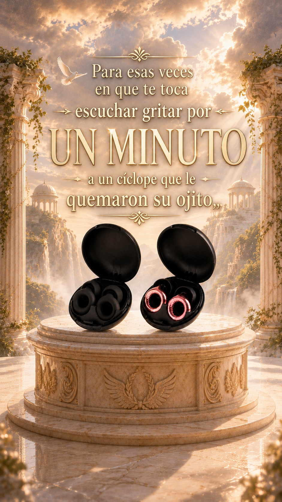

«De mí para tú. Sigue el viaje de tus Noiz, que vienen bajando desde el Olimpo.»
El regreso
como Odiseo a Ítaca, tu regalo cruza el mar para llegar a ti
dónde va ahora mismo
—
arribo profetizado por el oráculo: —
El viaje es de verdad: orden de flete N.º 275431109. Los nombres del mar están cambiados; las escalas, no.